Additional Static Exercises
Material
- Static Bayesian Networks by Felipe Sanchez (one of our study group members)
For detailed summary slides, please consult the separate sections on Multinomial, Gaussian, and Hybrid Bayesian Networks.
Exercises
These are answers and solutions to the exercises at the end of chapter 2 in Bayesian Networks in R with Applications in Systems Biology by by Radhakrishnan Nagarajan, Marco Scutari & Sophie Lèbre. Much of my inspiration for these solutions, where necessary, by consulting the solutions provided by the authors themselves as in the appendix.
R Environment
For today’s exercise, I load the following packages:
library(bnlearn)
library(igraph)
Nagarajan 2.1
Consider the
asiasynthetic data set from Lauritzen and Spiegelhalter (1988), which describes the diagnosis of a patient at a chest clinic who has just come back from a trip to Asia and is showing dyspnea.
Part A
Load the data set from the
bnlearnpackage and investigate its characteristics using the exploratory analysis techniques covered in Chap. 1.
data(asia)
str(asia)
## 'data.frame': 5000 obs. of 8 variables:
## $ A: Factor w/ 2 levels "no","yes": 1 1 1 1 1 1 1 1 1 1 ...
## $ S: Factor w/ 2 levels "no","yes": 2 2 1 1 1 2 1 2 2 2 ...
## $ T: Factor w/ 2 levels "no","yes": 1 1 2 1 1 1 1 1 1 1 ...
## $ L: Factor w/ 2 levels "no","yes": 1 1 1 1 1 1 1 1 1 1 ...
## $ B: Factor w/ 2 levels "no","yes": 2 1 1 2 1 1 1 2 2 2 ...
## $ E: Factor w/ 2 levels "no","yes": 1 1 2 1 1 1 1 1 1 1 ...
## $ X: Factor w/ 2 levels "no","yes": 1 1 2 1 1 1 1 1 1 1 ...
## $ D: Factor w/ 2 levels "no","yes": 2 1 2 2 2 2 1 2 2 2 ...
summary(asia)
## A S T L B E X D
## no :4958 no :2485 no :4956 no :4670 no :2451 no :4630 no :4431 no :2650
## yes: 42 yes:2515 yes: 44 yes: 330 yes:2549 yes: 370 yes: 569 yes:2350
Part B
Create a
bnobject with the network structure described in the manual page ofasia.
dag_2.1 <- model2network("[A][S][T|A][L|S][B|S][D|B:E][E|T:L][X|E]")
Part C
Derive the skeleton, the moral graph, and the CPDAG representing the equivalence class of the network. Plot them using
graphviz.plot.
# object creation
skel_2.1 <- skeleton(dag_2.1)
moral_2.1 <- moral(dag_2.1)
equclass_2.1 <- cpdag(dag_2.1)
# plotting
par(mfrow = c(1, 3))
graphviz.plot(skel_2.1, main = "Skeleton")
graphviz.plot(moral_2.1, main = "Moral")
graphviz.plot(equclass_2.1, main = "Equivalence Class")
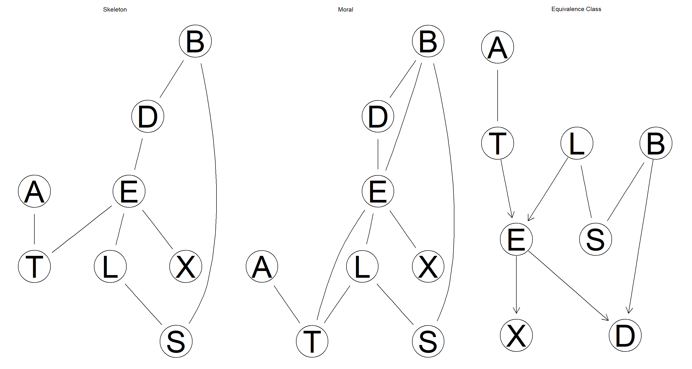
Part D
Identify the parents, the children, the neighbors, and the Markov blanket of each node.
# parents
sapply(nodes(dag_2.1), bnlearn::parents, x = dag_2.1)
## $A
## character(0)
##
## $B
## [1] "S"
##
## $D
## [1] "B" "E"
##
## $E
## [1] "L" "T"
##
## $L
## [1] "S"
##
## $S
## character(0)
##
## $T
## [1] "A"
##
## $X
## [1] "E"
# children
sapply(nodes(dag_2.1), bnlearn::children, x = dag_2.1)
## $A
## [1] "T"
##
## $B
## [1] "D"
##
## $D
## character(0)
##
## $E
## [1] "D" "X"
##
## $L
## [1] "E"
##
## $S
## [1] "B" "L"
##
## $T
## [1] "E"
##
## $X
## character(0)
# neighbors
sapply(nodes(dag_2.1), bnlearn::nbr, x = dag_2.1)
## $A
## [1] "T"
##
## $B
## [1] "D" "S"
##
## $D
## [1] "B" "E"
##
## $E
## [1] "D" "L" "T" "X"
##
## $L
## [1] "E" "S"
##
## $S
## [1] "B" "L"
##
## $T
## [1] "A" "E"
##
## $X
## [1] "E"
# markov blanket
sapply(nodes(dag_2.1), bnlearn::mb, x = dag_2.1)
## $A
## [1] "T"
##
## $B
## [1] "D" "E" "S"
##
## $D
## [1] "B" "E"
##
## $E
## [1] "B" "D" "L" "T" "X"
##
## $L
## [1] "E" "S" "T"
##
## $S
## [1] "B" "L"
##
## $T
## [1] "A" "E" "L"
##
## $X
## [1] "E"
Nagarajan 2.2
Using the network structures created in Exercise 2.1 for the asia data set, produce the following plots with
graphviz.plot:
Part A
A plot of the CPDAG of the equivalence class in which the arcs belonging to a v-structure are highlighted (either with a different color or using a thicker line width).
graphviz.plot(equclass_2.1,
highlight = list(arcs = vstructs(equclass_2.1, arcs = TRUE), lwd = 2, col = "red")
)
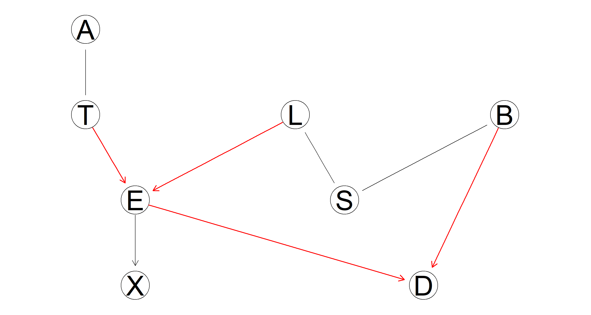
Part B
Fill the nodes with different colors according to their role in the diagnostic process: causes (“visit to Asia” and “smoking”), effects (“tuberculosis,” “lung cancer,” and “bronchitis”), and the diagnosis proper (“chest X-ray,” “dyspnea,” and “either tuberculosis or lung cancer/bronchitis”).
No clue on how to do this with graphviz.plot and the solution provided in the book results in an error message. Instead, I use igraph for plotting:
# create igraph object
equclass_igraph <- graph_from_edgelist(arcs(equclass_2.1))
# assign colours, effects = red; causes = green; diagnosis = blue
V(equclass_igraph)$color <- c("blue", "red", "green", "green", "red", "blue", "red", "green")
V(equclass_igraph)$name <- c("Visit to Asia", "Tubercolosis", "Bronchitis", "Dyspnoea", "Smoking", "Tuberculosis vs Cancer", "X-Ray", "Lung Cancer")
# plotting
plot(equclass_igraph,
layout = layout.circle,
vertex.size = 30,
vertex.label.color = "black"
)
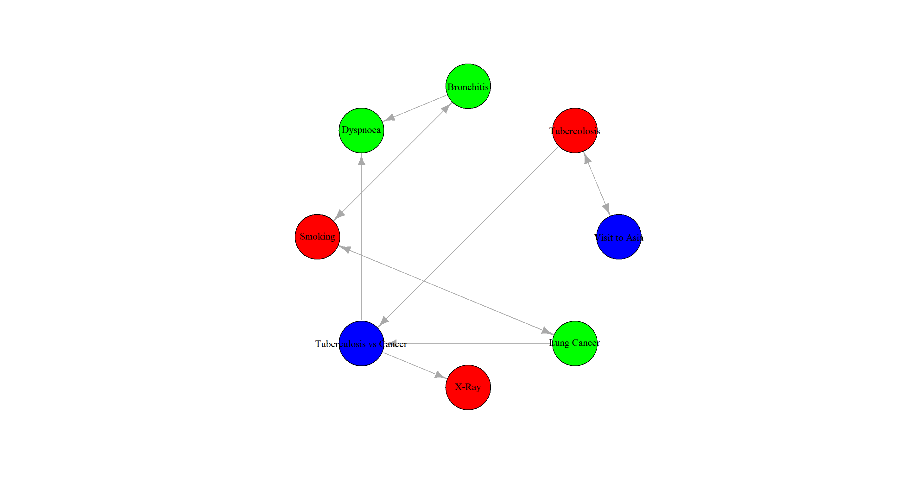
Part C
Explore different layouts by changing the
layoutandshapearguments.
par(mfrow = c(2, 5))
layout <- c("dot", "neato", "twopi", "circo", "fdp")
shape <- c("ellipse", "circle")
for (l in layout) {
for (s in shape) {
graphviz.plot(equclass_2.1, shape = s, layout = l, main = paste(l, s))
}
}
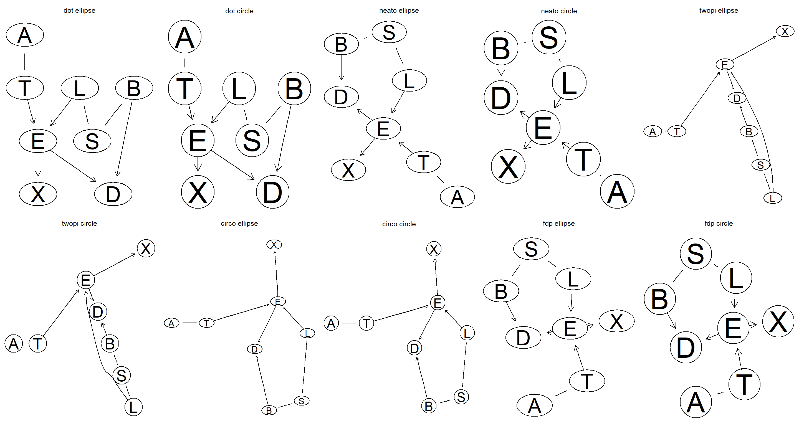
Nagarajan 2.3
Consider the
marksdata set analyzed in Sect. 2.3.
data(marks)
Part A
Discretize the data using a quantile transform and different numbers of intervals (say, from 2 to 5). How does the network structure learned from the resulting data sets change as the number of intervals increases?
intervals <- 2:5
par(mfrow = c(1, length(intervals)))
for (int in intervals) {
disc_data <- discretize(marks, breaks = int, method = "quantile")
graphviz.plot(hc(disc_data), main = int)
}
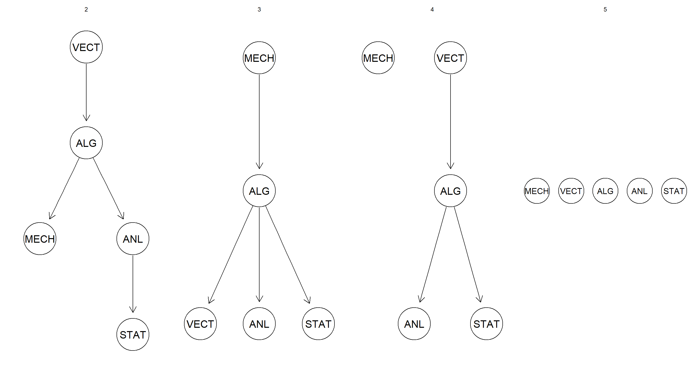
The network structure becomes flatter. I reckon this is caused by the loss of information as the number of intervals is increased and variables are discretised with no regard for joint distributions.
Part B
Repeat the discretization using interval discretization using up to 5 intervals, and compare the resulting networks with the ones obtained previously with quantile discretization.
intervals <- 2:5
par(mfrow = c(1, length(intervals)))
for (int in intervals) {
disc_data <- discretize(marks, breaks = int, method = "interval")
graphviz.plot(hc(disc_data), main = int)
}
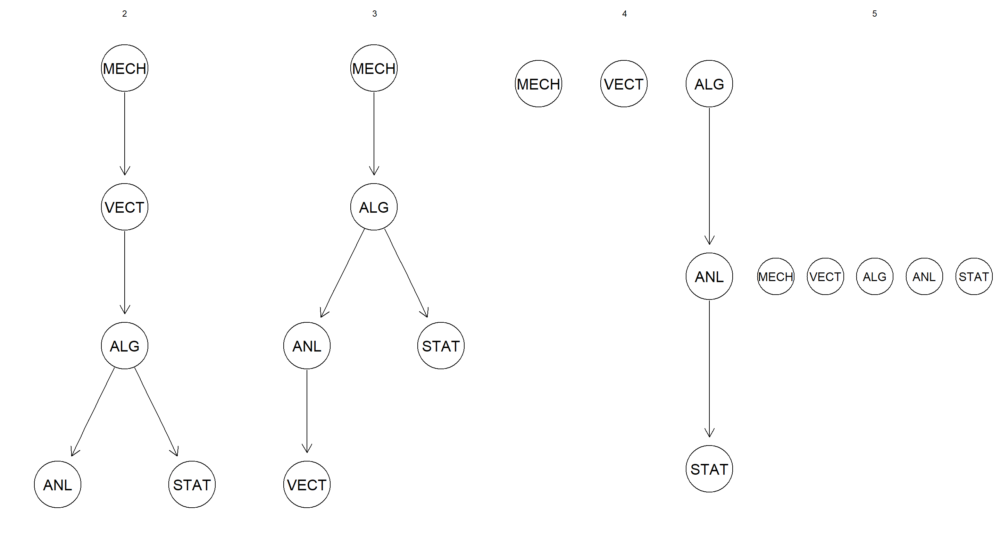
Although the specific placement of the nodes changes between the two discretisation approaches, the general pattern of loss of arcs as number of intervals increases stays constant.
Part C
Does Hartemink’s discretization algorithm perform better than either quantile or interval discretization? How does its behavior depend on the number of initial breaks?
intervals <- 2:5
par(mfrow = c(1, length(intervals)))
for (int in intervals) {
disc_data <- discretize(marks, breaks = int, method = "hartemink", ibreaks = 50, idisc = "interval")
graphviz.plot(hc(disc_data), main = int)
}
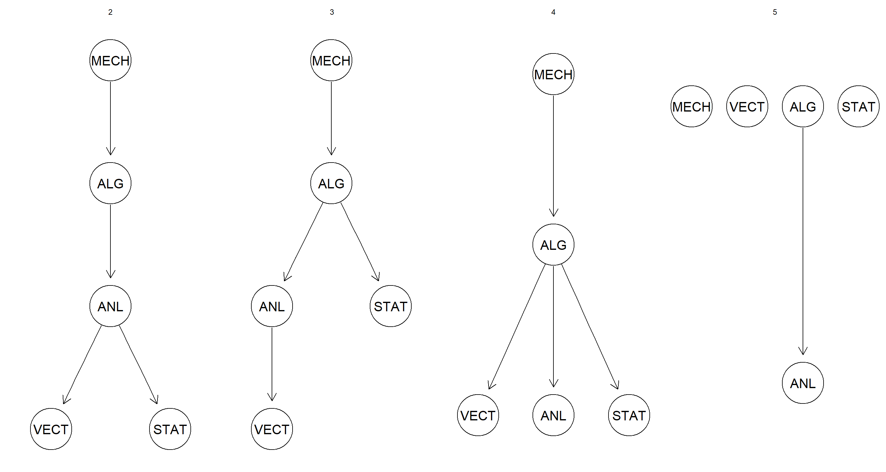
This form of discretisation seems more robust when assessing how accurately the DAG structure is learned when number of intervals is increased.
Nagarajan 2.4
The ALARM network (Beinlich et al. 1989) is a Bayesian network designed to provide an alarm message system for patients hospitalized in intensive care units (ICU). Since ALARM is commonly used as a benchmark in literature, a synthetic data set of 5000 observations generated from this network is available from bnlearn as
alarm.
data(alarm)
Part A
Create a
bnobject for the “true” structure of the network using the model string provided in its manual page.
true_bn <- model2network(paste("[HIST|LVF][CVP|LVV]", "[PCWP|LVV][HYP][LVV|HYP:LVF][LVF]",
"[STKV|HYP:LVF][ERLO][HRBP|ERLO:HR]", "[HREK|ERCA:HR][ERCA][HRSA|ERCA:HR][ANES]",
"[APL][TPR|APL][ECO2|ACO2:VLNG][KINK]", "[MINV|INT:VLNG][FIO2][PVS|FIO2:VALV]",
"[SAO2|PVS:SHNT][PAP|PMB][PMB][SHNT|INT:PMB]", "[INT][PRSS|INT:KINK:VTUB][DISC][MVS]",
"[VMCH|MVS][VTUB|DISC:VMCH]", "[VLNG|INT:KINK:VTUB][VALV|INT:VLNG]",
"[ACO2|VALV][CCHL|ACO2:ANES:SAO2:TPR]", "[HR|CCHL][CO|HR:STKV][BP|CO:TPR]",
sep = ""
))
Part B
Compare the networks learned with different constraint-based algorithms with the true one, both in terms of structural differences and using either BIC or BDe.
# learning
bn.gs <- gs(alarm)
bn.iamb <- iamb(alarm)
bn.inter <- inter.iamb(alarm)
# plotting
par(mfrow = c(2, 2))
graphviz.plot(true_bn, main = "True Structure")
graphviz.plot(bn.gs, main = "Grow-Shrink")
graphviz.plot(bn.iamb, main = "IAMB")
graphviz.plot(bn.inter, main = "Inter-IAMB")
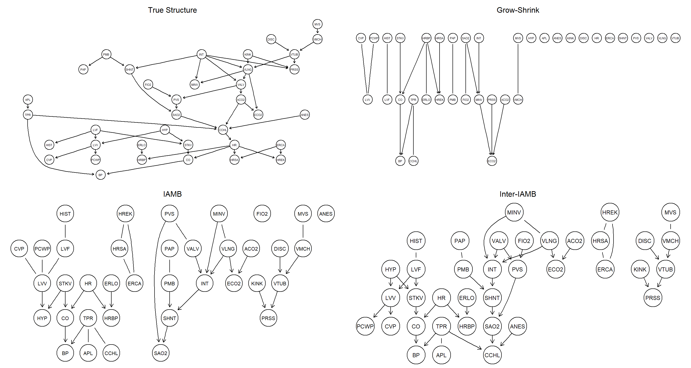
# comparisons
unlist(bnlearn::compare(true_bn, bn.gs))
## tp fp fn
## 5 14 41
unlist(bnlearn::compare(true_bn, bn.iamb))
## tp fp fn
## 16 18 30
unlist(bnlearn::compare(true_bn, bn.inter))
## tp fp fn
## 27 11 19
# Scores
score(cextend(true_bn), alarm, type = "bde")
## [1] -218063
score(cextend(bn.gs), alarm, type = "bde")
## [1] -337116.1
score(cextend(bn.iamb), alarm, type = "bde")
## [1] -263670.8
score(cextend(bn.inter), alarm, type = "bde")
## [1] -259922.1
Part C
The overall performance of constraint-based algorithms suggests that the asymptotic $\chi^2$ conditional independence tests may not be appropriate for analyzing
alarm. Are permutation or shrinkage tests better choices?
This should improve the performance drastically. However, computational time is so high that I refuse to run this code. Even the first call to gs() below takes more than 12 hours to run. I don’t know what the authors of the exercise material had envisioned the learning outcome of this to be.
bn.gs2 <- gs(alarm, test = "smc-x2")
bn.iamb2 <- iamb(alarm, test = "smc-x2")
bn.inter2 <- inter.iamb(alarm, test = "smc-x2")
unlist(compare(true_bn, bn.gs2))
unlist(compare(true_bn, bn.iamb2))
unlist(compare(true_bn, bn.inter2))
Part D
How are the above learning strategies affected by changes to
alpha?
Shrinkage should also improves structure learning performance, but computational time should be much lower than it is with permutation tests. Much like with the previous exercise, however, the code below just takes too long for my liking to finish running.
bn.gs3 <- gs(alarm, test = "smc-x2", alpha = 0.01)
bn.iamb3 <- iamb(alarm, test = "smc-x2", alpha = 0.01)
bn.inter3 <- inter.iamb(alarm, test = "smc-x2", alpha = 0.01)
unlist(compare(true, bn.gs3))
unlist(compare(true, bn.iamb3))
unlist(compare(true, bn.inter3))
Nagarajan 2.5
Consider again the
alarmnetwork used in Exercise 2.4.
Part A
Learn its structure with hill-climbing and tabu search, using the posterior density BDe as a score function. How does the network structure change with the imaginary sample size
iss?
par(mfrow = c(2, 5))
for (iss in c(1, 5, 10, 20, 50)) {
bn <- hc(alarm, score = "bde", iss = iss)
main <- paste("hc(..., iss = ", iss, ")", sep = "")
sub <- paste(narcs(bn), "arcs")
graphviz.plot(bn, main = main, sub = sub)
}
for (iss in c(1, 5, 10, 20, 50)) {
bn <- tabu(alarm, score = "bde", iss = iss)
main <- paste("tabu(..., iss = ", iss, ")", sep = "")
sub <- paste(narcs(bn), "arcs")
graphviz.plot(bn, main = main, sub = sub)
}
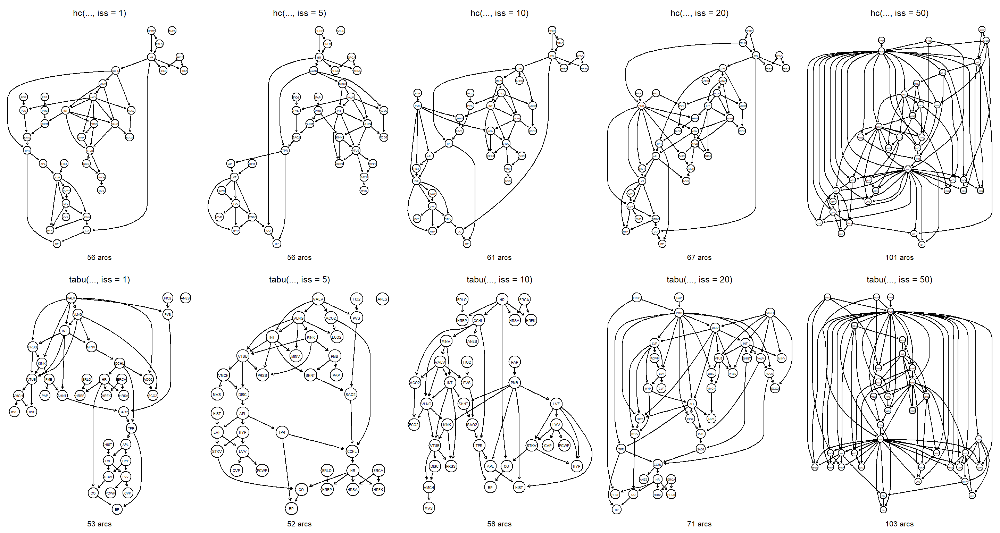
The number of arcs increases with iss. Large values of iss over-smooth the data and thus result in networks with similar scores and therefore allow for many arcs to be included in the final networks.
Part B
Does the length of the tabu list have a significant impact on the network structures learned with
tabu?
par(mfrow = c(1, 5))
for (n in c(10, 15, 20, 50, 100)) {
bn <- tabu(alarm, score = "bde", tabu = n)
bde <- score(bn, alarm, type = "bde")
main <- paste("tabu(..., tabu = ", n, ")", sep = "")
sub <- paste(ntests(bn), "steps, score", bde)
graphviz.plot(bn, main = main, sub = sub)
}
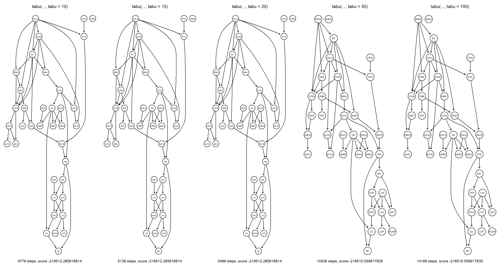
Increasing the tabu length severely affects the learned structure of the final network. Firstly, it does so by increasing the raw number of network structures explored by tabu. Secondly, getting stuck in local maxima becomes increasingly unlikely.
Part C
How does the BIC score compare with BDe at different sample sizes in terms of structure and score of the learned network?
par(mfrow = c(2, 6))
for (n in c(100, 200, 500, 1000, 2000, 5000)) {
bn.bde <- hc(alarm[1:n, ], score = "bde")
bn.bic <- hc(alarm[1:n, ], score = "bic")
bde <- score(bn.bde, alarm, type = "bde")
bic <- score(bn.bic, alarm, type = "bic")
main <- paste("BDe, sample size", n)
sub <- paste(ntests(bn.bde), "steps, score", bde)
graphviz.plot(bn.bde, main = main, sub = sub)
main <- paste("BIC, sample size", n)
sub <- paste(ntests(bn.bic), "steps, score", bic)
graphviz.plot(bn.bic, main = main, sub = sub)
}
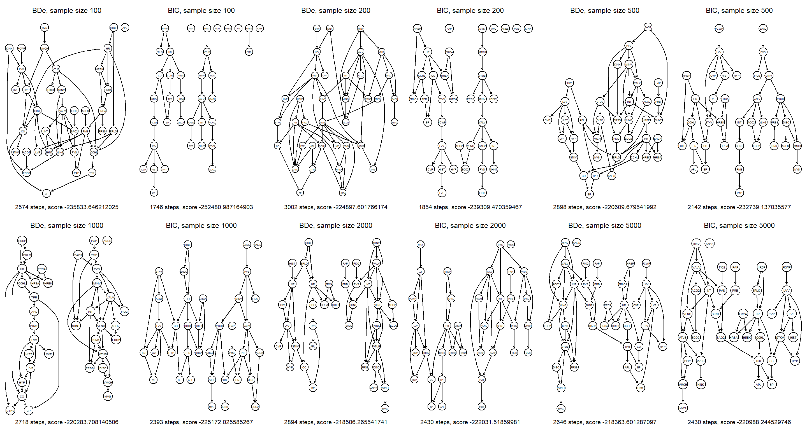
The networks become more similar as sample size increases. At small sample sizes, BIC results in sparser networks than BDe.
Nagarajan 2.6
Consider the observational data set from Sachs et al. (2005) used in Sect. 2.5.1 (the original data set, not the discretized one).
Part A
Evaluate the networks learned by hill-climbing with BIC and BGe using cross-validation and the log-likelihood loss function.
The sachs data file is available here.
sachs <- read.table("sachs.data.txt", header = TRUE)
bn.bic <- hc(sachs, score = "bic-g")
bn.cv(bn.bic, data = sachs)
##
## k-fold cross-validation for Bayesian networks
##
## target network structure:
## [praf][PIP2][p44.42][PKC][pmek|praf][PIP3|PIP2][pakts473|p44.42][P38|PKC][plcg|PIP3][PKA|p44.42:pakts473][pjnk|PKC:P38]
## number of folds: 10
## loss function: Log-Likelihood Loss (Gauss.)
## expected loss: 65.48251
bn.bge <- hc(sachs, score = "bge")
bn.cv(bn.bge, data = sachs)
##
## k-fold cross-validation for Bayesian networks
##
## target network structure:
## [praf][plcg][PIP2][p44.42][PKC][pmek|praf][PIP3|PIP2][pakts473|p44.42][P38|PKC][PKA|p44.42:pakts473][pjnk|PKC:P38]
## number of folds: 10
## loss function: Log-Likelihood Loss (Gauss.)
## expected loss: 65.3477
The BGe network fits the data slightly better than the BIC-network.
Part B
Use bootstrap resampling to evaluate the distribution of the number of arcs present in each of the networks learned in the previous point. Do they differ significantly?
set.seed(42)
narcs.bic <- bn.boot(sachs, algorithm = "hc", algorithm.args = list(score = "bic-g"), statistic = narcs)
narcs.bge <- bn.boot(sachs, algorithm = "hc", algorithm.args = list(score = "bge"), statistic = narcs)
narcs.bic <- unlist(narcs.bic)
narcs.bge <- unlist(narcs.bge)
par(mfrow = c(1, 2))
hist(narcs.bic, main = "BIC", freq = FALSE)
curve(dnorm(x, mean = mean(narcs.bic), sd = sd(narcs.bic)), add = TRUE, col = 2)
hist(narcs.bge, main = "BGe", freq = FALSE)
curve(dnorm(x, mean = mean(narcs.bge), sd = sd(narcs.bge)), add = TRUE, col = 2)
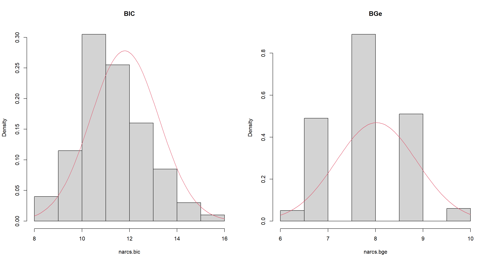
Number-of-arc-distributions are markedly different between BIC and BGe networks.
Part C
Compute the averaged network structure for
sachsusing hill-climbing with BGe and different imaginary sample sizes. How does the value of the significance threshold change asissincreases?
set.seed(42)
t <- c()
iss <- c(5, 10, 20, 50, 100)
for (i in iss) {
s <- boot.strength(sachs,
algorithm = "hc",
algorithm.args = list(score = "bge", iss = i)
)
t <- c(t, attr(s, "threshold"))
}
t
## [1] 0.780 0.415 0.430 0.380 0.440
Session Info
sessionInfo()
## R version 4.2.1 (2022-06-23 ucrt)
## Platform: x86_64-w64-mingw32/x64 (64-bit)
## Running under: Windows 10 x64 (build 19044)
##
## Matrix products: default
##
## locale:
## [1] LC_COLLATE=English_Germany.utf8 LC_CTYPE=English_Germany.utf8 LC_MONETARY=English_Germany.utf8 LC_NUMERIC=C LC_TIME=English_Germany.utf8
##
## attached base packages:
## [1] stats graphics grDevices utils datasets methods base
##
## other attached packages:
## [1] igraph_1.3.4 bnlearn_4.8.1
##
## loaded via a namespace (and not attached):
## [1] highr_0.9 bslib_0.4.0 compiler_4.2.1 jquerylib_0.1.4 R.methodsS3_1.8.2 R.utils_2.12.0 tools_4.2.1 digest_0.6.29 jsonlite_1.8.0
## [10] evaluate_0.16 R.cache_0.16.0 pkgconfig_2.0.3 rlang_1.0.5 graph_1.74.0 cli_3.3.0 rstudioapi_0.14 Rgraphviz_2.40.0 yaml_2.3.5
## [19] parallel_4.2.1 blogdown_1.13 xfun_0.33 fastmap_1.1.0 styler_1.8.0 stringr_1.4.1 knitr_1.40 sass_0.4.2 vctrs_0.4.1
## [28] grid_4.2.1 stats4_4.2.1 R6_2.5.1 rmarkdown_2.16 bookdown_0.29 purrr_0.3.4 magrittr_2.0.3 htmltools_0.5.3 BiocGenerics_0.42.0
## [37] stringi_1.7.8 cachem_1.0.6 R.oo_1.25.0